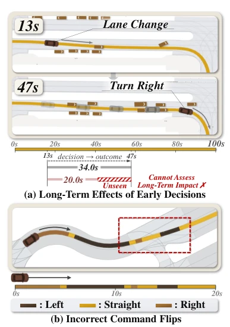
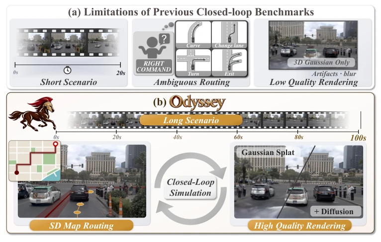
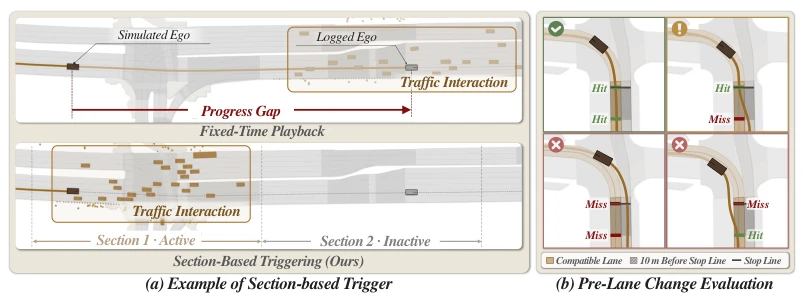
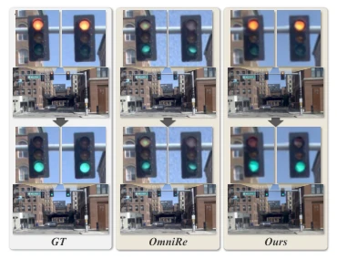
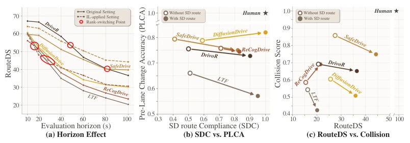
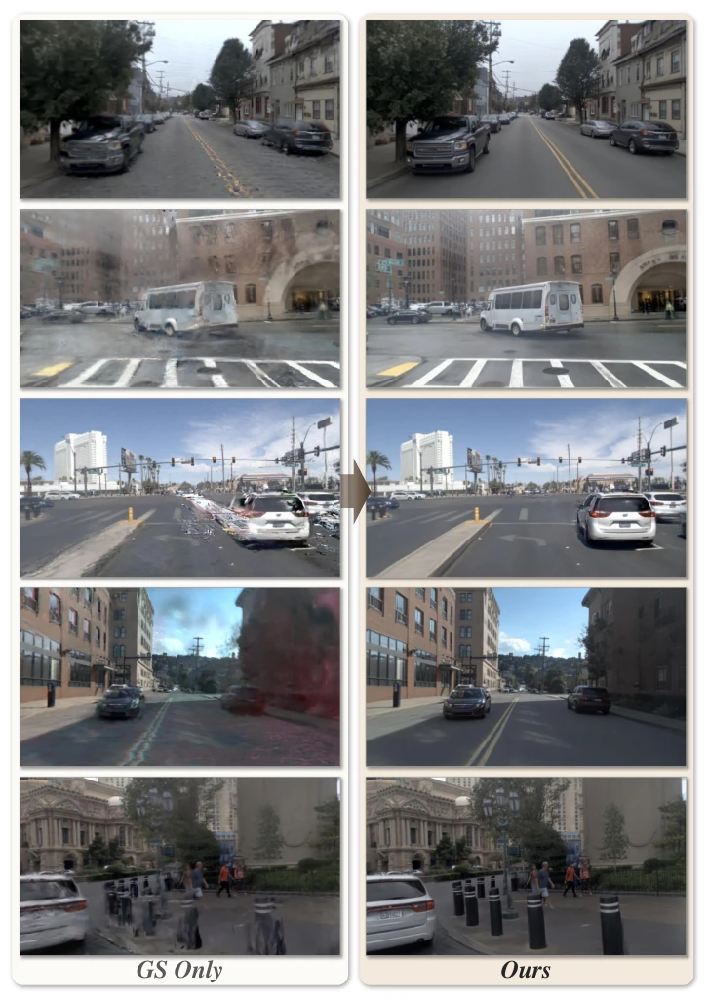
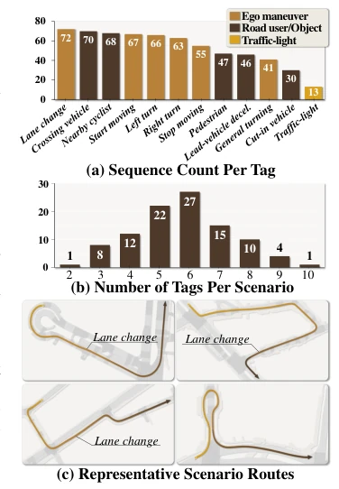
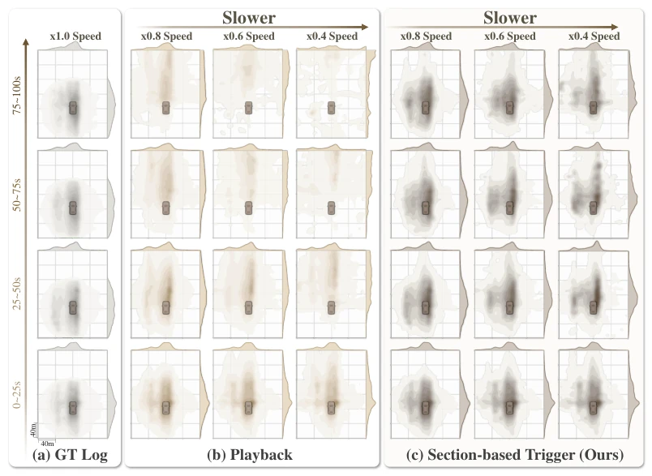
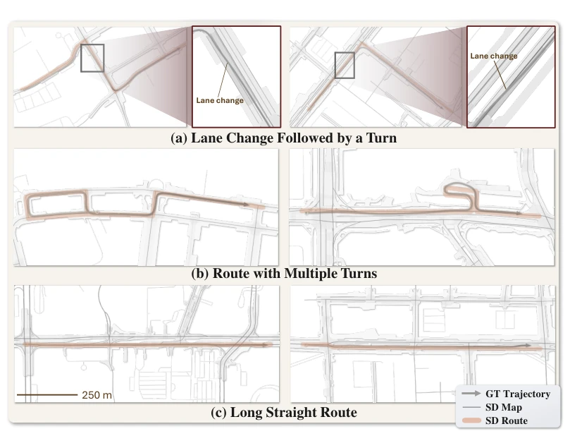
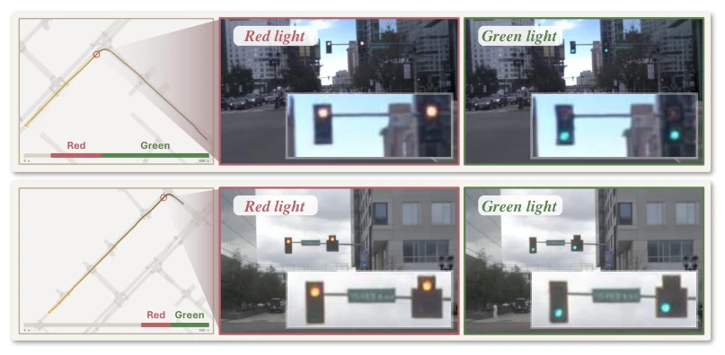

Odyssey attempts to end the "short-sighted" era of end-to-end driving evaluation using 100-second long sequences. Extending the evaluation window from 20 seconds indeed provides an opportunity to test long-range dependencies like "right turn after lane change". However, while replacing vague instructions with SD maps resolves ambiguity, it shifts the mapping challenge from "abstract route to specific lane" to the model, essentially still asking the E2E model to guess, and SD maps lack lane-level structural information. In rendering, 3DGS combined with Diffusion repair improves image quality but doubles inference latency; does this constitute sacrificing efficiency for evaluation? In summary, this is a more rigorous testbed, but whether the tasks themselves sufficiently approximate real-world complex interactions depends on whether subsequent models can avoid getting lost in long sequences and whether SD routes can truly replace the fine guidance of HD maps.
Existing closed-loop benchmarks like HUGSIM (Zhou et al., 2025) and DriveArena typically evaluate only clips of approximately 20 seconds, unable to capture the long-range impact of early decisions (such as lane changes) on subsequent navigation (such as right turns) (Figure 2). Furthermore, navigation targets based on directional instructions (e.g., "turn right") contain ambiguity and cannot distinguish specific choices in consecutive exits; for example, when there are two consecutive right-turn exits, the instruction cannot specify which one (Figure 2). In terms of rendering, pure 3DGS generates blurry artifacts when deviating from the trajectory, interfering with planner judgment. Odyssey aims to address the issues of short evaluation horizon, vague navigation targets, and declining rendering quality through 100-second long sequences and explicit SD routes, ensuring E2E planners maintain safe navigation during continuous interaction, and introducing new metrics to evaluate lane-change preparation.

Figure 2: Limitations of existing evaluation. (a) Short rollouts cannot assess whether a prior lane change enables a later right turn. (b) In- consistent command flips obscure navigation intent along a continuous trajectory.
The overall workflow constructs 100-second scenes based on nuPlan logs. First, OmniRe is utilized to reconstruct 3D Gaussian scenes, incorporating ground modeling and coverage-aware sampling to optimize geometric consistency. Second, the Fixer diffusion model is employed to perform one-step denoising on rendered images, repairing blurriness and artifacts under new viewpoints (Figure 5). In simulation, a segment-based traffic trigger mechanism is proposed, activating traffic flow according to the ego-vehicle's progress to avoid interaction misalignment resulting from fixed-time playback (Figure 4). Navigation input shifts from instructions to SD map routes, requiring the planner to combine sensor perception to map routes into lane-level actions. Evaluation metrics include SD Route Compliance (SDC), Pre-Lane Change Score (PLCS), and an improved RouteDS, comprehensively considering route deviation, collisions, and lane-change preparation conditions.

Figure 1: Odyssey framework. (a) Previous closed-loop benchmarks suffer from limited scenario horizons, ambiguous command-based routing, and artifacts from 3DGS-only rendering. (b) Odyssey evaluates E2E planners over continuous closed-loop rollouts based on 100-second driving sequences with explicit SD-route guidance and diffusion-refined 3DGS observations, assessing sustained safe navigation toward the intended destination.

Figure 4: Traffic triggering and pre-lane change evaluation. (a) When the simulated ego is slower than the logged ego, fixed-time playback (top) places traffic interactions ahead of it. By activating traffic as the ego approaches a section and keeping subsequent sections inactive, section- based triggering (bottom) aligns traffic interactions with ego progress. (b) Pre-Lane Change requires both driving in route-compatible lanes throughout the final 10 m and crossing the stop line in a compatible lane. The four examples illustrate cases that satisfy both conditions, only one, or neither.
LTF, SafeDrive, and other baselines were tested on 100 nuPlan scenes. Results indicate that SD route guidance significantly improved route compliance (SDC), but did not universally improve lane-change preparation (PLCA) (Figure 8). Long-sequence evaluation revealed the misleading nature of short-sighted evaluation: DrivoR outperformed SafeDrive in short windows, but surpassed it after 100 seconds (Figure 8). Furthermore, improvements in Open-loop metrics (such as PDMS) do not guarantee Closed-loop performance; ReCogDrive's RL fine-tuning actually reduced closed-loop performance. Perception mIoU improved after Diffusion fine-tuning, and RouteDS also outperformed pure 3DGS. This demonstrates that long-range closed-loop evaluation is crucial for identifying model defects, and while SD routes improve compliance, they fail to resolve all safety interaction challenges.

Figure 6: Traffic-light modeling. Our de- formation field reproduces the red-to-green transition, which OmniRe fails to recover.

Figure 8: Effects of evaluation horizon and route guidance under non-reactive traffic. (a) RouteDS decreases with longer evaluation horizons, and model rankings change at the highlighted crossings. Solid and dashed curves show the original and IL-based settings, respectively. (b) SD- route guidance improves SDC but reduces PLCA for most planners. (c) RouteDS improves with SD-route guidance, but collision scores decrease for most planners. Higher collision scores indicate fewer collision penalties.

Figure 10: Qualitative Comparison of Fixer Refinement. We show challenging novel views with limited coverage from training observations, where 3DGS-only renderings exhibit pronounced arti- facts. Fine-tuned Fixer reduces these artifacts and improves visual detail.
其他图片Other Figures

Figure 3: Scenario composition and exam- ple routes in Odyssey.

Figure 9: Effect of section-based triggering on nearby agent density. (a) GT Log shows nearby agent density during recorded driving. (b) Playback follows the original traffic timeline, with density decreasing as the ego slows and simulation continues. (c) Section-based triggering aligns traffic activation with ego progress, maintaining density closer to GT Log across the evaluated speeds and time intervals.

Figure 11: Example trajectories and SD-Routes from Odyssey. The benchmark includes lane changes in preparation for upcoming turns, routes with multiple turns, and long straight routes. These scenarios span varying route complexity and include anticipatory maneuvers that reflect the driver’s navigation intent.

Figure 12: Additional Qualitative Results of Traffic Light Modeling. Our model reproduces red- to-green transitions in sync with the traffic-light schedule in each scene.